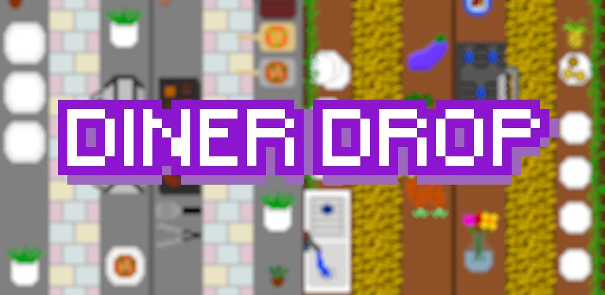
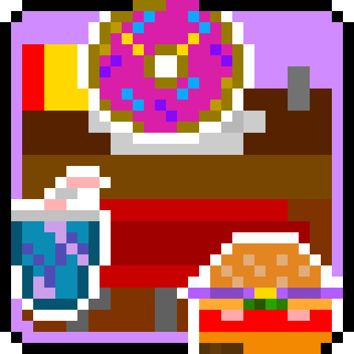
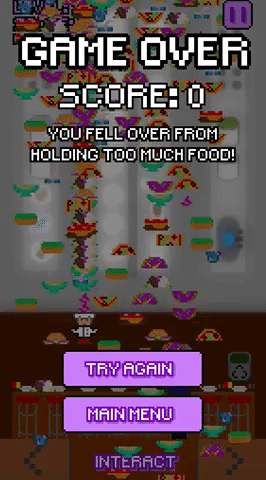

Diner Drop is live!

The development log for Diner Drop started back in early May of this year and even in that first one you could see the basic elements: falling lettuce buns, a magical garbage can that gets rid of everything, and our main hero(ine) Chef moving back and forth.
Now we’re here.
Sure, there’s more than just falling lettuce buns (12 other unique falling food items to be exact, thank you very much) and the garbage can isn’t quite as magical but Chef is still here and still moving back and forth.
It’s the same game, just better; and I’m quite happy with how it all turned out.
You can have a look at all of the development posts here if you’d like a full history of changes.
Play it now
If you’re reading this just to find out where to play it, I understand.
 **Desktop and mobile**: HTML5 version (web browser)Android: Google Play Store
If you want to get hyped before you play it, read on.
The Back of the Box Pitch
Take on the role of Chef as you work to feed loads of hungry customers with very particular tastes while avoiding the onslaught of falling food from the kitchen manager who’s working to clean out the food storage area in the middle of a service!
- Catch and assemble 5 unique orders made from 13 different food parts!
- Work as fast as you can to earn the most points and the high score!
- Track your stats to see how many orders you’ve served and how many customers you’ve pleased or angered!
- Unlock 2 additional Chefs and 2 additional kitchens to work in!
The Full(y) Feature(d) List
What a sales pitch! I wish I had an actual game box to put that on…
A less in your face feature list might be:
- short learning curve; easy to pick up and play
- a fun game loop (catching and serving orders) with a little bit of challenge (avoiding the rest of the falling food and prioritizing orders)
- simple controls
- presentation that fits the game
- original pixel art
- appropriately quick and jolly background music track
- some original sound effects
- persistent data across play sessions that enables:
- high score
- statistics
- game settings like music and sound effects preferences
- unlockables
- replayability via the high score and unlockables
- easter eggs and unlockables
- 2 secret voice lines that have a small chance of playing
- 2 unlockable Chef sprites and 2 additional kitchens
Time Was on My Side
Unlike my most recent forays into game development, Diner Drop was a project without any strict deadline and it benefited greatly from that.
I was able to completely plan from the beginning the kind of game that I wanted to make and how I wanted to develop it.
I was able to have a proper features list consisting of both necessary and nice-to-have ones as well as the freedom to add and remove items if I felt like it.
I was able to test it out, find bugs, fix them, find more bugs, fix them too, and reflect on how this cycle basically turned me into an entomologist.
I was able to take my time to find the right sound effects, figure out that some didn’t work, and record what I actually wanted.
Ultimately, I was able to produce the game that I wanted without reservations.
The Final “Godot in a gif(fy)” Devlog
The last development log is packed with a ton of great features that really make the game feel polished, replayable, and complete.
There were a few things that I decided to scrap so I could release the game sooner and get to work on my next project. Features like accelerometer support on mobile and extra content like more Chef sprites, kitchens, and food and order types.
There were also things that I just decided to leave as is for the same reason. Namely a weird issue that breaks the build if I try to clean up (what I think are) unused assets like fonts and graphics. The game still runs if I leave them in but it makes the final package just a little bit larger; we’re talking on the kilobyte scale though since it’s made up of low resolution pixel art and small font files; not really a big deal.
Lessons Learned
Practice Makes Pretty Good
In the course of developing Diner Drop, I also managed to develop two other games with the Godot engine: Jenn’s Adventure and CMD and CTRL. This means that I began developing it when I had little to no experience with the engine and finished developing it with the most Godot experience.
This allowed me to reflect on some of the design and development choices I’d made in the beginning of the project. For example, each option on the main screen (instructions, credits, etc.) is actually just an overlay with whatever text and images it needs that becomes visible when the user taps on it.
A different approach to each option’s screen may have been to use a new scene (which I didn’t really understand when I started Diner Drop development) for each one and set it as the current one when the user tapped the button.
I was also able to practice drawing pixel art for the other two games which allowed me to more quickly create additional backgrounds and other graphical assets for Diner Drop that ended up looking better.
Sometimes You Need a Break
I got pretty discouraged when I tried to create an Android build for the game and almost stopped development entirely because of it. An entire day was spent trying to figure it out before I gave up and decided to take a break from the game (June 27th).
During that break I developed Jenn’s Adventure (June 28th - June 30th), CMD and CTRL (July 11th and 12th), wrote their associated development blog posts, and took a well deserved break.
I came back to Diner Drop again on July 21st and this time tried creating an Android build on my Mac (having done all development on my Windows PC thus far). After a couple of tries, I was able to get a working Android apk that installed and ran on my device.
I had that Mac the entire time but it hadn’t dawned on me that the Android build issue could have been tied to my environment. That break allowed me to come at the problem with a fresh mind and think about how else I could solve the issue. It’s kind of like having a friend or colleague look at a problem that’s stumped you and they immediately point out something obvious that you had overlooked.
The End of an Era
Diner Drop’s development is officially complete and it’s now another game for the history books blog roll. As usual, it’s a relief to know that it’s done but more importantly, I’m happy that I was able to again meet my goal of ideating, designing, developing, and releasing exactly the game I wanted.
I hope you enjoy playing Diner Drop!

**Desktop and mobile**: HTML5 version (web browser)Android: Google Play Store